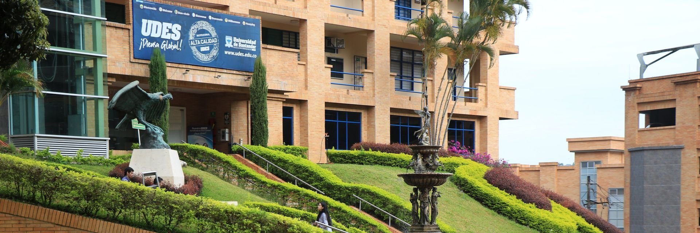
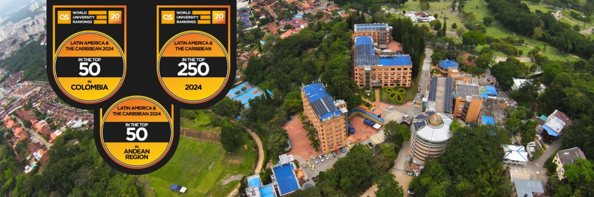

Evaluación de Recursos Educativos Digitales
Ana Sofia Salazar
Jhon Edison Perdomo
Julián David Ordoñez
Universidad de Santander - UDES
Especialización en Aplicación de TIC para la Enseñanza - EATICE